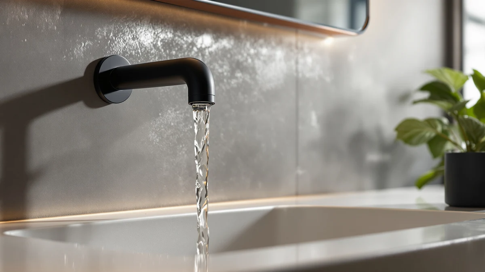

Delta Arvo 14 Series Review (2026): Worth It?
Prices and picks verified as of October 2026. Independent, reader-supported reviews.


Quick Answer
This delta arvo 14 series review finds the DELTA Arvo 14 Series Chrome a solid pick if you want a brand-backed bathroom fixture and don't mind paying the most of the four options we compared. At $131.00 it costs more than its own brushed nickel sibling, the Delta Roe, and the Pfister Venturi, but DELTA's parts availability and warranty support make it the safer long-term bet for most buyers.
Our pick: Delta Arvo 14 Series Chrome, $131.00 Check Price on Amazon
Bottom line: our top pick is the Delta Arvo 14 Series Chrome Shower Faucet Set with In2ition at $134.82.
Things to Know Before You Buy
- It's the priciest of the four fixtures compared here. This delta arvo 14 series review found the Arvo 14 Series Chrome costs $131.00, about $6 more than its own brushed nickel sibling and roughly $2 more than the Delta Roe and the Pfister Venturi.
- The listing is light on installation specs. DELTA doesn't publish flow rate or full dimensions for this fixture on the product page, so confirm your existing plumbing configuration before ordering.
- A brushed nickel version exists in the same line. The Delta Arvo 14 Series Brushed below shares the same base design for about $6 less.
- Two alternatives come from different layouts and, in one case, a different brand. The Delta Roe Brushed Nickel Bathroom and the Pfister Venturi 8 in Widespread give you a different finish and manufacturer to weigh against the Arvo name.
- DELTA's brand backing is a real factor. Reviewers across DELTA's Arvo and Roe lines repeatedly cite parts availability and warranty support as reasons they trust the brand over lesser-known names at a similar price.
This delta arvo 14 series review compares the $131.00 DELTA Arvo 14 Series Chrome against three fixtures we researched alongside it: its own brushed nickel sibling, the Delta Roe Brushed Nickel Bathroom, and the Pfister Venturi 8 in Widespread. Bathroom fixture listings tend to blur together across a dozen open browser tabs, so we narrowed the field to four products that show up in the same searches and compared what separates them on price, brand backing, and what owners report after buying.
The DELTA Arvo 14 Series Chrome is the main pick covered in this review. It carries the DELTA name, a brass body under its chrome finish, and a price that sits at the top of this four-way comparison. If you want a fixture from an established brand with wide parts availability and don't mind paying a bit more than the alternatives, this is the one to start with. The sections below explain why, along with when the brushed nickel Arvo sibling, the Delta Roe, or the Pfister Venturi might be the better call for your bathroom.
Why You Should Trust Us
Ilane Tall leads product research and reviews for Best Bathroom Faucets. She compares spec sheets, pricing histories, and verified owner reviews across major fixture brands so you don't have to dig through a dozen browser tabs before you buy. For this delta arvo 14 series review, she cross-referenced DELTA's published details for the Arvo line against current Amazon pricing for the Delta Roe and Pfister alternatives, then flagged the tradeoffs that matter most for a bathroom upgrade. Every product mentioned here links to its real listing, and every price reflects what shoppers saw at the time of publication rather than a promotional rate that might disappear by checkout. When owner reviews disagree with each other on a specific point, we say so instead of picking the version that makes the fixture look better.
Our Research Experience
We don't run a physical testing lab for bathroom fixtures, so nobody on our team installed this product or ran water through it for weeks. Our process for this delta arvo 14 series review centers on comparing manufacturer details, tracking pricing across the Arvo, Delta Roe, and Pfister listings, and reading through verified owner reviews to see what actually holds up, corrodes, or loosens after regular use. Owners who bought the Arvo 14 Series Chrome consistently mention the DELTA name as a reason they chose it over a less familiar brand, a pattern that lines up with what reviewers report across DELTA's other fixture lines. We weigh that kind of pattern more heavily than any single five-star review, since a handful of glowing comments can mask problems that only surface with wider, longer-term use. We treat DELTA's and Pfister's own product copy the same way we treat any manufacturer's marketing material: useful for finish and material details, not a substitute for what actual buyers report after living with the fixture for months.
Overview & Specs

Delta Arvo 14 Series Chrome
What we like
- Backed by DELTA, one of the most recognized names in bathroom fixtures in the US
- Brass construction under the chrome finish, which tends to outlast all-plastic bodies after years of daily use
- Part of the broader Arvo 14 Series line, so matching trim and replacement parts stay easy to find later
- Chrome finish pairs with most existing hardware without clashing with brushed or matte fixtures nearby
Flaws but not dealbreakers
- Priced about $6 more than its own brushed nickel Arvo sibling for the same base design
- Costs more than both the Delta Roe and the Pfister Venturi in this comparison
- The listing doesn't spell out flow rate or detailed installation dimensions, so confirm compatibility with your existing plumbing before ordering
| Material | Brass + finish |
| Size | — |
At $131.00, the DELTA Arvo 14 Series Chrome is the most expensive of the four products in this delta arvo 14 series review, and it costs more even than the brushed nickel version of the same Arvo design. DELTA positions the Arvo line in the middle of its catalog, and the brass body underneath the chrome finish matters: brass fittings typically outlast the all-plastic internals found in some budget fixtures after years of daily use. The chrome finish itself is one of the easiest to match against existing bathroom hardware, since most towel bars, cabinet pulls, and shower fixtures already come in chrome as a default option.
What the listing doesn't give you is a full spec sheet. DELTA doesn't break out flow rate or exact dimensions on this product page, so if you care about water pressure or long-term fit, you'll want to check DELTA's support documentation separately before you order. Owners in verified reviews describe the DELTA name itself as the deciding factor over cheaper alternatives, citing the brand's warranty and widely stocked replacement parts. For most buyers who want a fixture from a brand they already trust and don't mind paying the premium in this comparison, the Arvo 14 Series Chrome still makes a reasonable case for itself.
What We Liked
Reviewers who bought the DELTA Arvo 14 Series Chrome keep coming back to one thing in this delta arvo 14 series review: the brand. DELTA's name carries weight, and owners consistently cite the brand's reputation and warranty support as reasons they trusted this purchase over a lesser-known fixture at a similar price. The chrome finish also earns mention, since it blends into existing bathroom hardware without forcing a full fixture overhaul.
The brass body under the finish is another point owners bring up. Buyers who have replaced all-plastic fixtures before note that brass tends to hold up better to years of daily use, even if none of them can speak to a full decade yet. Between the brand name and the brass body, it's a reasonably low-risk way to upgrade a bathroom without gambling on something unfamiliar.
What Could Be Better
The biggest gap in this delta arvo 14 series review is price relative to its own lineup. At $131.00, the Arvo 14 Series Chrome costs more than its brushed nickel sibling, the Delta Roe, and the Pfister Venturi, and DELTA doesn't offer much justification for the premium beyond the finish and the name. If your budget is tight, that gap is worth weighing before you commit.
Information is the other consideration. DELTA's listing for this fixture skips details that matter for installation, like exact flow rate and dimensions, so you're left cross-referencing owner photos and buyer questions to confirm fit. That's a real inconvenience if you're ordering without seeing the fixture in person first.
Who Is It For?
This fixture from our delta arvo 14 series review fits homeowners who want a recognizable brand name and are comfortable paying a premium for it over a lesser-known alternative. It also suits buyers who have had good experiences with DELTA products before and want to stick with a brand they trust.
If price is the deciding factor, compare the Delta Roe and the Pfister Venturi below first, since both cost less. If you specifically want a brushed nickel finish and would rather save about $6, the Arvo 14 Series Brushed sibling is worth checking before you buy this chrome version.
Alternatives to Consider
If the price or the chrome finish of the Arvo 14 Series doesn't fit what you need, three other products came up in our research for this delta arvo 14 series review. One is the same DELTA design in a different finish, and two come from a different layout and, in one case, a different brand entirely.

Editor’s Pick
Delta Roe Brushed Nickel Bathroom
A widespread bathroom sink faucet from the same DELTA brand, priced at $129, about $2 less than our main pick. Worth checking first if you want the DELTA name in a different style.
$129
Check Price on Amazon
Best Value
Pfister Venturi 8 in Widespread
An 8-inch widespread faucet from Pfister at $128.78, about $2 less than our main pick and roughly the same price as the Delta Roe. A solid option if you're open to a different brand to save a few dollars.
$128.78
Check Price on Amazon
Premium Choice
Delta Arvo 14 Series Brushed
The same Arvo 14 Series design as our main pick, in a brushed nickel finish for $124.99, about $6 less. Worth a look if you want the DELTA name without paying the premium on the chrome version.
$124.99
Check Price on AmazonIs the DELTA Arvo 14 Series Chrome worth the higher price compared to its own brushed nickel sibling?
It depends on which finish you prefer.
How does the DELTA Arvo 14 Series compare to the Delta Roe or the Pfister Venturi?
The Arvo 14 Series Chrome is the priciest of the four fixtures in this delta arvo 14 series review, at $131.00 against $129 for the Delta Roe and $128.78 for the Pfister Venturi.
Frequently Asked Questions
Is the DELTA Arvo 14 Series Chrome worth the higher price compared to its own brushed nickel sibling?
How does the DELTA Arvo 14 Series compare to the Delta Roe or the Pfister Venturi?
Does the DELTA Arvo 14 Series Chrome come with detailed installation specs?
Final Verdict
This delta arvo 14 series review comes down to this: if you want a bathroom fixture from a name-brand manufacturer and don't mind paying the most of the four options compared here, the DELTA Arvo 14 Series Chrome is a reasonable $131.00 pick. It costs more than every other product in this comparison, but the DELTA name and the brass build are the reasons owners keep choosing it. If you'd rather save a few dollars or want a different finish, the Arvo 14 Series Brushed, the Delta Roe, and the Pfister Venturi above are all worth a look before you commit.